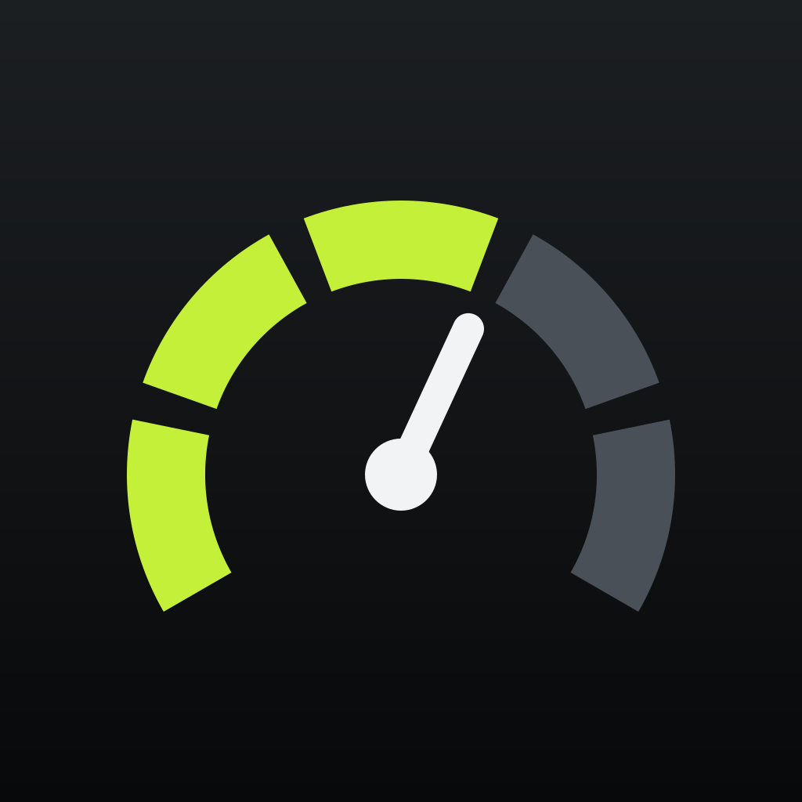

Fuel
Food log · from Overload
Bring your food log across.
The Food tab from Overload is its own app now. Your days, targets, favorites and saved meals come with you. Nothing is removed from Overload.
You can still import later in Settings → Backup.